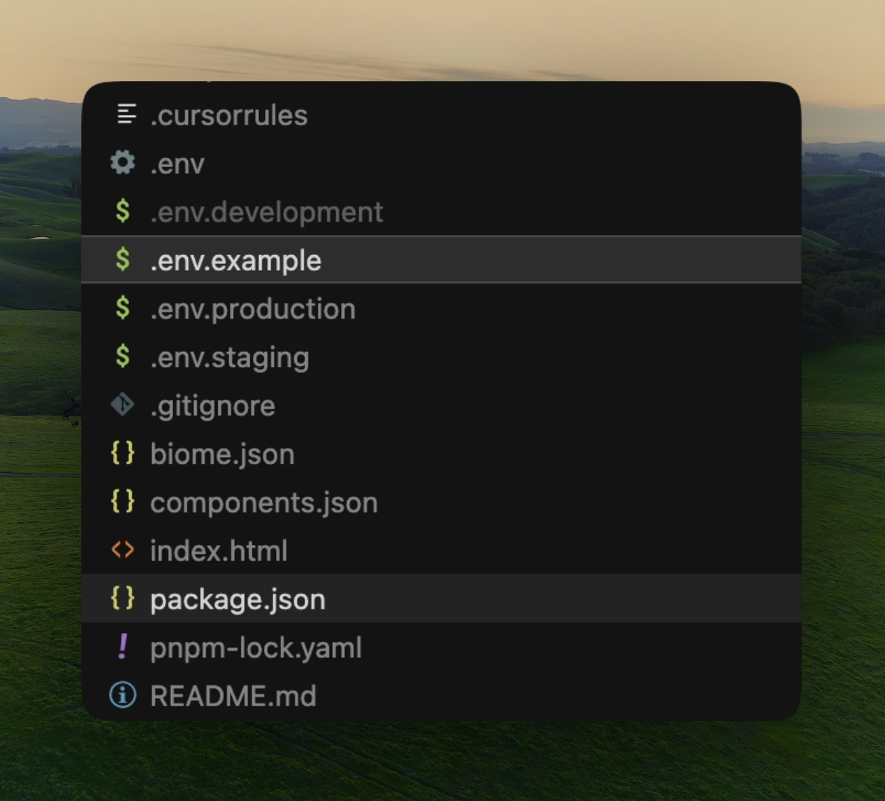
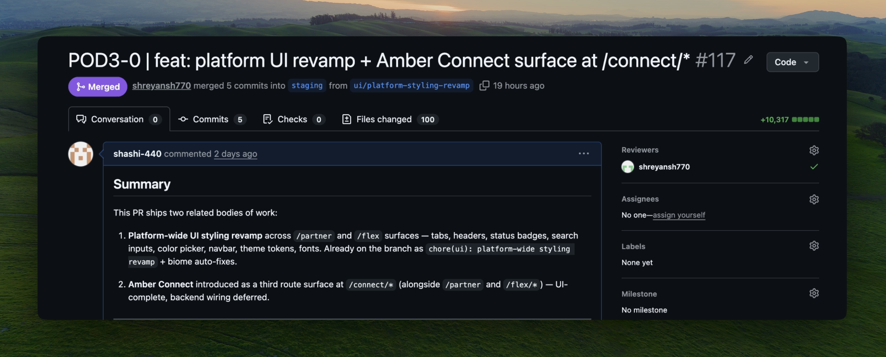
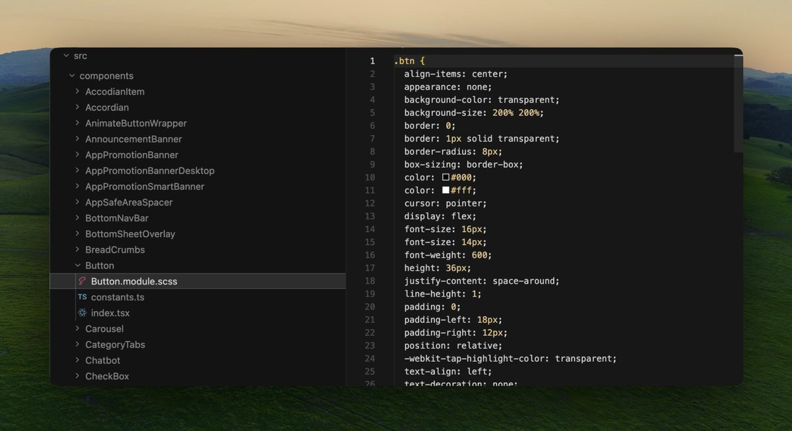
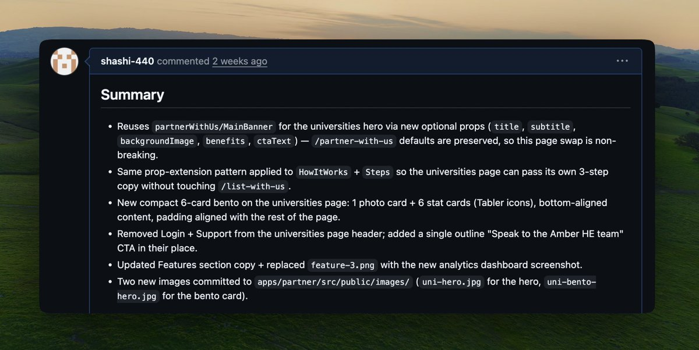

Shipping PRs at Amber: a playbook from the design team
Over the last few months a few of us on the design team have been shipping PRs across our codebase. Between us we've covered UI cleanups, full features, and end-to-end frontends on a couple of dashboards.
This is the playbook for the rest of the team. The repos that matter at Amber, the conventions we follow, the specific channels you'll need. If you've been meaning to start, here's the order to do it in.
If anything in here loses you, paste it into Cursor (or Claude) and ask what it means. Use AI shamelessly throughout.
1. Get access and run the app
Ping Rajat in DevOps to be added to the GitHub org and the repos you'll need. The ones we touch most:
amber-user-website— amberstudent.com (consumer site)amber-partners— Flex and Connect 2.0 (partner dashboard)s.web— older partner-facing stuff (monorepo)s.base— Ruby backend (less likely for a designer PR)
There are more, but these are where most of our PRs land. Turn on 2FA on your GitHub account. Set up an SSH key. Any engineer on the team can walk you through it in five minutes.
Once you have access, clone the repo and open it in Cursor.
Before you run anything, three things to figure out:
- Package manager varies by repo.
amber-partnersuses pnpm.s.webuses npm.amber-user-websitehas bothpackage-lock.jsonandyarn.lockin the repo, so ask in #engineering which one we actually use before running install. Don't mix package managers. - Node version. Look for
.nvmrcor the"engines"field inpackage.json. Install nvm (node version manager), then runnvm use. - Env vars. Copy
.env.exampleto.env.local. These are secret keys the app needs (API keys, DB URLs). Ping [#engineering] for the actual values. Never commit these.

.env.example to copy, and the lockfile to identify the package manager (here pnpm-lock.yaml means pnpm).Then run install, then dev. npm install (or whatever the lockfile says), then npm run dev. Check the "scripts" block in package.json to be sure. Open the URL it prints.
You will hit at least one of these on day one:
- Wrong node version. Run
nvm use. - Missing
.envvalue. Ask which one in [#engineering]. - Port already in use. Kill the process on that port, or change the port.
- "Module not found". Re run install.
When something breaks, paste the exact error into Cursor's chat (Cmd+L) and ask what it means before you ping a human. Cursor nails nine out of ten setup errors. When it can't help, ping [#engineering] with the exact error, the file and line, and what you already tried.
When the dev server runs, open a file you can identify on the page (the navbar component is a good first target). Change a single character somewhere safe. Save. Confirm the page hot-reloads in your browser with the new character visible. That's the loop: code on your laptop, app in your browser, change shows up.
2. Learn just enough git
In most of our frontend repos, staging is the working branch, not main. You branch off staging, push your branch, and open a PR back into staging. Each repo has its own production branch (release for amber-user-website, main for amber-partners, production for s.web) which staging flows into. Five commands cover the loop.
git checkout staging. Go to the working branch.git pull origin staging. Get the latest from GitHub.git checkout -b POD3-1234-fix-tooltip-typo. Make your own branch using your ticket ID as the prefix.git add .thengit commit -m "POD3-1234 | fix: tooltip typo on settings". Save a checkpoint with the team's commit format.git push. Upload your branch to GitHub.
And three rules:
- Never commit to main directly. Always make a branch.
- Never commit
.env,node_modules, lockfiles you didn't touch, or anything generated. - If your branch gets weird, don't do surgery on it. Make a fresh branch off
mainand copy your changes over. Cheaper than fighting git.
Bonus rule: any git message you don't understand, paste it into Cursor before you run another command. The wrong git command can wipe your work. The ones you'll hit most: "detached HEAD" (you committed to nowhere, Cursor will tell you how to save it), "merge conflict" (two people changed the same lines, open the file, look for the <<<<<<< markers, pick which version stays), and "your branch is behind main" (run git pull --rebase origin main). Read first, run second.
For branch and PR naming, we use the ticket ID as a prefix. Common prefixes you'll see: POD3, P2, P1D, PLG, VP1. These come from our ticket tracker. Your PM or your ticket will tell you which prefix applies. Branches: POD3-1234-short-description. PR titles: POD3-1234 | feat: what changed or POD3-1234 | fix: what changed. Look at the last 5 merged PRs in your repo to copy the exact format.

amber-partners: ticket prefix, type, summary, all baked into the PR title. Note the base branch is staging, not main.3. Navigate the codebase
Three folders to find in Cursor. The paths vary slightly across our repos, the patterns hold.
- Components. In
amber-user-websiteandamber-partners, the component folder issrc/components. Ins.web(which is a monorepo), shared UI lives inpackages/ui. - Routes. In
amber-user-website:src/pagesandsrc/app(mid-migration between routers). Inamber-partners:src/app. Ins.web:apps/partner,apps/dashboard, orapps/websitedepending on the surface. - Theme / tokens.
amber-user-websitehassrc/themefor design tokens. Other repos keep theme files near their components.

Then trace one screen end to end. Pick something you know on a surface you'll be shipping to. Find the route file. It imports a page component. Open that. That imports more. Follow the chain.
Read JSX bottom up. JSX is the HTML ish markup at the bottom of a component file. You can already read it: divs, buttons, props that look like CSS. Start there. Map JSX to what's on screen. Then trace upward to where the data comes from. Engineers usually read top down because they care about state and logic. You care about the rendered UI, so you read in reverse.
When a file is too dense even bottom up, @-reference it in Cursor's chat and ask for a plain English walkthrough.
Three Cursor shortcuts:
Cmd+Clicka component to jump to its definition.Cmd+Pto jump to any file by name.Cmd+Shift+Fto search the whole codebase.
4. Ship a tiny first PR
My first PR at Amber added a page transition animation. Reviewed and merged the same day.
Pick something with zero risk for your first one.
- A typo in a tooltip
- Padding off by 2px
- A hover state that doesn't match Figma
- A missing
aria-label(accessibility tag for screen readers) - Outdated copy in a button
Before you open the PR, three checks:
- Run the team's checks locally.
npm run lint,npm run typecheck,npm test. Check the"scripts"block inpackage.json. If any fail, fix them. CI runs the same things on your PR and a red PR can't merge. - Check for
CONTRIBUTING.mdand.github/PULL_REQUEST_TEMPLATE.mdin the repo. If they exist, follow them. - Read 3 to 5 recently merged PRs in your area. Open the Pull Requests tab on the repo you're contributing to, filter by recent merges in the folder you're touching, and copy the conventions exactly. Branch naming, commit style, title format, description shape.
Your PR description should have:
- A one line summary at the top
- What changed for the user
- Before / after screenshots (use them, this is the part engineers most appreciate from us)
- Edge cases or follow ups

If CI goes red, click "Details" on the failing check, read the error, fix locally, push again. If the error looks like a wall of red, paste the full log into Cursor with the file it's pointing at. CI failures almost always come down to one missing semicolon, one stray import, or one type mismatch. Don't force push your first PR. Just add commits.
After your PR gets merged, do three things in the next ten minutes. Open the live site (staging or prod), find your change, take a before/after screenshot for your portfolio. Note how long the review took: that's the team's actual SLA for trivial PRs. Then open the merged PR and read your own diff end to end. The things you broke and didn't notice are sitting in there waiting for you.
5. Get fluent with Cursor
Most of what we use Cursor for falls into four modes. Explain ("walk me through this file") when you need to understand something before you touch it. Locate ("where in this codebase would I add a new toast variant?") when you know what you want to do but not where. Translate ("here's a stack trace, explain it for a designer") when an error message looks like noise. Draft ("change this Button's padding from 12 to 16 and update any variant that depends on it") when you know what you want and you want Cursor to write it for you. The same chat window (Cmd+L) handles all four.
Before you change any code, ask Cursor first.
- "Walk me through this file."
- "What does this function do?"
- "Where should I add X?"
- "What breaks if I change Y to Z?"
Give it context. @-reference specific files (@Button.tsx, @connect/dashboard/page.tsx). The more specific the context, the less it hallucinates. When the output's bad, the cause is almost always thin context. @-reference more files, paste the exact error, tell it the framework, tell it what you're trying to do for the user. Over share. Context is free.
Use Cmd+K for inline edits inside a file. Let it draft, then read the diff (side by side of old vs new) before you accept.
The trap: Cursor will confidently invent function names, props, and imports that don't exist, and it writes them with the same tone as real ones. Cmd+Click every new import it adds.
The rule that keeps us out of trouble: you don't need to explain every line of what Cursor wrote, but you do need to explain the change. What it does, why this file, what could break. If you can't answer those three, ask Cursor more questions before you push.
6. Pair with an engineer
For typos and copy, just ship.
For your first real change (tweaking a Button's variants, fixing a modal's focus trap, retokenizing a card) book 30 mins with a friendly engineer on your product team. Most of us have paired with @Saurav_50 at some point. [Add other engineers who are good to pair with — fill in.] Bring your branch ready to demo, not a blank screen.
Three questions, every time:
- "Is this the right place to put this?"
- "What breaks if I change X to Y?"
- "Any conventions I'm missing?"
The point of pairing is to learn the team's taste. Which patterns we prefer, which file conventions we hold sacred, which "obvious" choices are actually contested. Every codebase has a dozen of these undocumented norms and you won't find them by reading the code.
When no one's free, Cursor's a passable stand in reviewer. Paste your diff and ask "review this for a [Next.js, React Native, whatever] codebase, anything I'm missing, anything that could break elsewhere?" Not as good as a human review, but it catches the obvious stuff and lets you ship instead of waiting.
On our team, more of the UI work is starting to ship as designer PRs. Small visual fixes, full features, and on a couple of surfaces the entire frontend. These are changes we used to hand off in Figma frames or Slack screenshots, and now they often close out with a merged PR instead.
It's still early days. The work happens alongside everything else we already do (Figma, research, design reviews), not instead of it. Some weeks it's a single typo PR, other weeks a full feature. The mix is different for each of us, and there's no expectation about how much you ship to count as "part of this."
ShashiK
Design Team